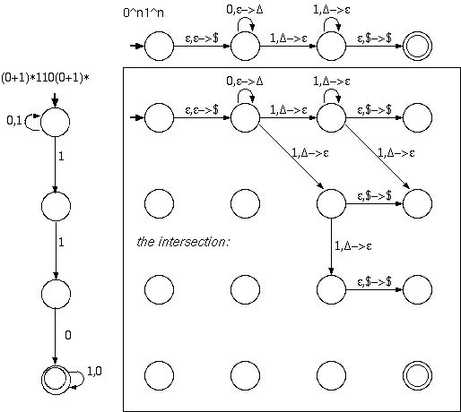
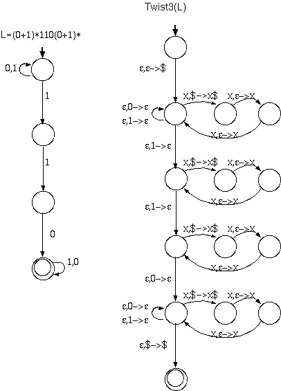

S -> 1A0 A -> 1A0 | B B -> CC C -> 0D1 D -> 0D1 | e
S -> ABA | A -> e | AC C -> 01 | 0C1 ; 0^n1^n B -> 0B1 | D | F ; 0^m1^nm!=n D -> 0 | 0D ; one or more 0s F -> 1 | 1F ; one or more 1sWhy this works: Since R=(00*11*)(00*11*)* is regular, the complement ~R includes all strings which are not even of the correct form. We can Union 0*1* complement... nondeterministically guess which pair mismatches.

Note the accept state is not reachable in this case, which is good since the intersection of the two languages is empty.

| 1 2 3 4 5 ---|--------------------------------------- 1 | A,C A,C A,C A,C A,C 2 | B B B B 3 | S,A,C S,A,C S,A,C 4 | B B 5 | S,A,CHere we conclude that 00000 is derivable from the start symbol. Since S is in the fifth row, first column of the table.
The CYK parse table for 000000
| 1 2 3 4 5 6 ---|--------------------------------------------- 1 | A,C A,C A,C A,C A,C A,C 2 | B B B B B 3 | S,A,C S,A,C S,A,C S,A,C 4 | B B B 5 | S,A,C S,A,C 6 | BHere we conclude that 000000 is not derivable from the start symbol. Since S is not in the sixth row, first column of the table. It's not so hard to see that all strings of zeros of odd length >= 3 are derivable from this grammar.
q10- -q2- --qaccept
q1000- -q200- -xq30- -x0q4- -x0-qreject
q111- -q31- -1q3- reject
q0110#11- -q090#11- -q030#11- -0q09#11- -0q03#11- -0#q1111- -0#q0511- -0q12#x1- -0#1q051- -q120#x1- -0#11q05- q12-0#x1- -0#1q071- -q130#x1- -0#q0711- -xq08#x1- -0q07#11- -x#q10x1- -q070#11- -x#xq101- q07-0#11- reject
Show that the set of decidable languages is closed under...
Create a TM M from the two input machines M1 and M2 where:
M = "On input w:
Since M1 and M2 are decidable, we are guaranteed that they will accept or reject in finite time (ie they will not loop forever). So, TM M will be decidable.
We again create a TM M from the input machine M1 where:
M = "On input w:
Create a TM M from the two input machines M1 and M2 where:
M = "On input w:
Since M1 and M2 might not ever reject, we must run them in parallel to guarantee that if either of them accepts, we can accept. Note that step 2 might never be reached, but that is okay, since if we only recognize the language, we do not have to reject.
Create a TM M from the input machine M1 where:
M = "On input w: In parallel:
We know that we can enumerate all the strings that M1 accepts to create L1, but creating the * of that list is much trickier. We must choose an ordering that reaches any string in finite time. One possible ordering would be to include the strings made by repeating the first n strings of L1 up to n times letting n go from 0 to infinity. Since all strings in the *'d language will eventually appear on L2, we can accept w if it is in the language.